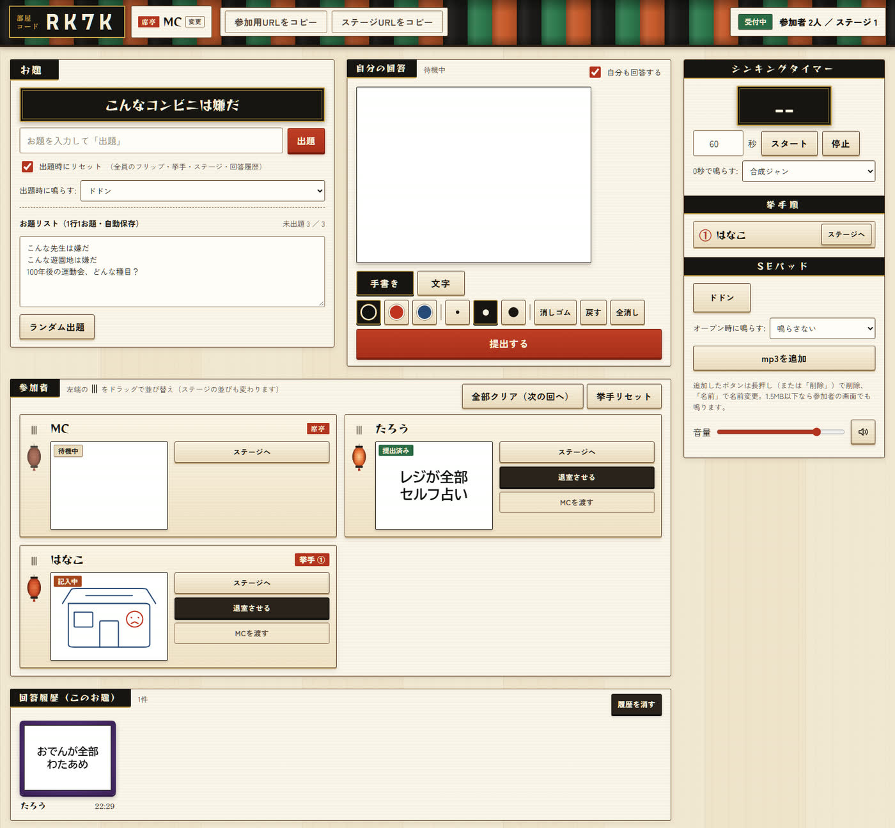

MCは進行役で部屋の主。MCのブラウザが部屋になり、回答者とステージ（配信画面）がそこへつながります（PC推奨）。

1 2 3 3 4 4 5 8 縦3本線 タイマー SEパッド注意 MCのタブを閉じる・PCがスリープすると部屋が消えます。遊んでいる間は開いたままに。再読み込みなら同じ部屋コードで復帰し、回答者も自動でつながり直します。席亭の名前は、左上の「MC」の横の「変更」から変えられます。
進め方
- 部屋を作る：URLを開いて 部屋を作る（MC）。左上に部屋コード（4文字）が出ます。
- 回答者を呼ぶ：参加用URLをコピー を押し、Discordなどに貼って送ります。
- お題を出す：お題を入力して 出題。リストから選ぶなら ランダム出題。出題の瞬間に「ドドン」が鳴り、全員のフリップ・挙手・回答履歴がリセットされます。
- 様子を見る：参加者カードの提灯と札で状態がわかります（待機中→記入中→提出済み）。手を挙げた人は「挙手順」に押した順で並びます。
- 指名する：発表させたい人の ステージへ。配信画面の中央に、その人の裏向きのフリップが出ます。
- めくる：本人が自分の画面でめくって発表。めくれないときは、呼んだ人のカードに出る オープン（MC側で）。
- 下げる：終わったら 下げる。その人のフリップは白紙に戻り、次の回答を書けます。
- くり返す：下げた回答は「回答履歴」に残ります。⑤〜⑦をくり返し、区切りがついたら③で次のお題へ。
覚えておくと便利
- MCも回答できる：「自分の回答」に書いて 提出する、自分のカードの ステージへ。回答しないときは「自分も回答する」のチェックを外します。
- 並び替え：カード左の縦3本線をドラッグ。配信画面の提灯の並びも同じ順に変わります。
- MCの交代：相手のカードの MCを渡す。部屋コード・お題・回答履歴はそのまま引き継がれます。
- シンキングタイマー：秒数を入れて「スタート」。残り秒は全員の画面と配信画面に出ます。
- SEパッド：ボタンを押すと全員の画面で効果音が鳴ります。「mp3を追加」で自分の音も足せます。
- 自動で鳴らす音：「出題時に鳴らす」「オープン時に鳴らす」「0秒で鳴らす」で選べます（「鳴らさない」も可）。
- 全部クリア（次の回へ）：全員のフリップを白紙に戻します（回答履歴は残ります）。
- 挙手リセット：全員の挙手を下ろします。